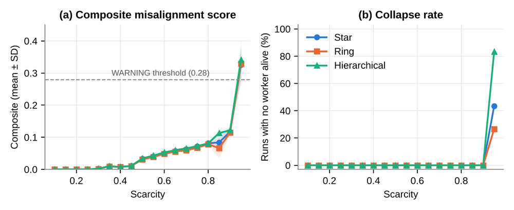
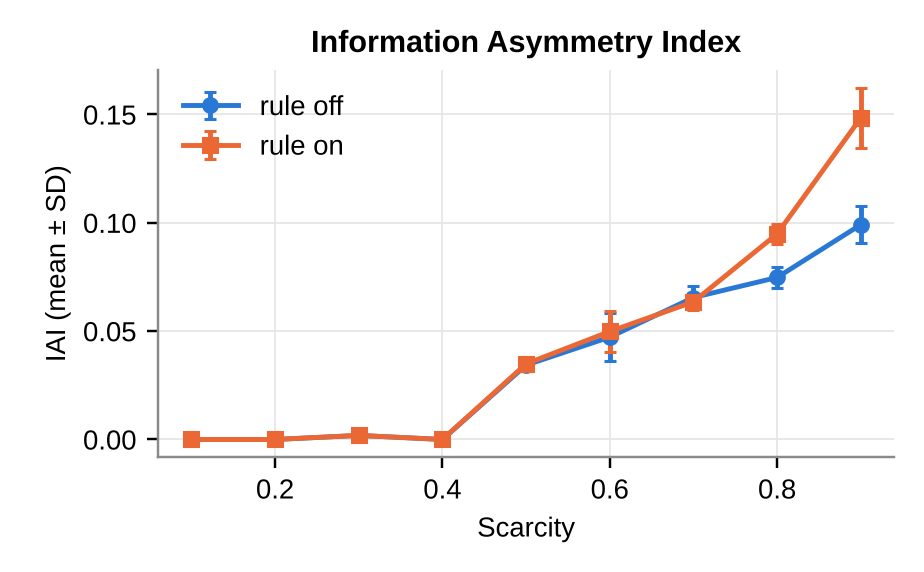

When honest AI agents fail together
I built an agent-based model of an AI orchestrator and its worker agents sharing a limited resource budget, where no agent is allowed to lie or hoard. As the budget shrinks, the system drifts quietly, then collapses with little warning, and the shape of the team decides how badly.
- Model
- NetLogo, 1 orchestrator, up to 100 workers
- Experiments
- 5 experiments, 4,080 runs
- Measures
- 5 misalignment metrics
- Outcome
- Slow drift, then sudden collapse
Context
AI agents increasingly work in teams. In orchestration platforms such as Mistral Workflows [1], a coordinating agent splits a goal into subtasks, hands them to worker agents and assembles the results. These teams run on shared, finite resources: context windows, token budgets, rate limits, memory. The more agents compete for them, the less each one gets.
The project started as the final assignment of the Agent-Based Modelling course, which asked for an ODD protocol [2] describing a model. I then implemented the model, ran the experiments and wrote a full paper as a personal extension.
Problem
Alignment research mostly tests one model at a time, for example whether a single agent acts against its operator [3]. Complex systems, however, can behave very differently from their parts, and often shift abruptly from one regime to another instead of degrading smoothly [4].
Research question: under what conditions does a population of individually aligned AI agents produce collectively misaligned behaviour at the system level?
Methodology
Model
MESA (Multi-Agent Emergent Systems Arena) has one orchestrator, N worker agents and an optional monitor. Each tick, the orchestrator shares out a resource pool, weighted by how much it trusts each worker. Workers progress on their subtask and report their progress. Under pressure, their reports get noisier and their logging less reliable, and an undelivered report leaves the orchestrator with a stale view. A worker whose resources fall below a survival threshold dies, and the survivors inherit its work.
Five metrics measure the system’s health: the gap between true and reported progress (information asymmetry), resource inequality, the orchestrator’s error about overall progress (task completion drift), the share of skipped logging (oversight erosion), and the share of workers that died. A weighted composite flags WARNING at 0.28 and CRITICAL at 0.45.
Topologies
Three team structures change how a report reaches the orchestrator (Table 1).
| Topology | How a report travels | Real-world analogue |
|---|---|---|
| Star | Each worker reports directly, in one hop | Small team, everyone talks to the manager |
| Ring | Direct, and a failed report can be relayed by a neighbour | Colleagues who pass on a message |
| Hierarchical | Outer workers report through a broker, in two hops; if the broker dies, its dependents may die too | A company with middle managers |
Experiments
I ran five BehaviorSpace experiments, 4,080 runs in total, with up to 30 repetitions per setting: a sweep of scarcity across the three topologies, a sensitivity test on the survival threshold, population sizes from 10 to 100, an ablation that switches off the model’s only biased reporting rule, and tick-by-tick trajectories. Before the long runs, the model’s output was checked against an independent Python re-implementation.
Implementation
NetLogo 7.0.4 with BehaviorSpace, analysis in Excel (Power Query) and Python, statistical tests with SciPy.
Results
A quiet drift, then a cliff
Up to a scarcity of 0.90, every metric rises slowly and stays far below the WARNING line. No worker dies. Between 0.90 and 0.95 the system tips: workers die one after another and many runs end with no worker alive.

Structure matters only at the edge
Below the edge the three topologies behave almost identically. At scarcity 0.95, the hierarchy collapses in 83% of runs, against 43% for the star and 27% for the ring (p < 0.001), and it fails faster. One dead broker takes its dependents with it, while the ring’s relay gives every report a second chance.
Dishonesty is not needed
With the under-reporting rule switched off, the information gap is the same up to a scarcity of 0.70. The rule only adds to it at the highest pressures, about a third of the gap at 0.90. Most of the damage comes from ordinary overload: noisy reports, lost messages, stale beliefs.

The watchdog rarely barks
The monitor’s score tracks the true information gap closely (r = 0.92), but its alarm fired in only 3 of 1,530 runs below scarcity 0.95. Monitoring shares the same budget, so it checks fewer workers exactly when it matters most.
What did not work as expected
The ODD predicted five patterns. Three were supported. The expected step in the information gap at moderate scarcity did not appear, and resources never concentrated in a few trusted workers (Gini below 0.02), because identical workers under the same pressure stay equally trusted. The location of the tipping point is also set by the survival threshold, so it is a sensitivity result, not a universal number.
Takeaway
A team of well-behaved agents can drift and then fail suddenly when resources run short, without any of them being designed to cheat, and the people overseeing them get little warning. For anyone running several AI agents on one machine, this suggests keeping headroom, checking actual outputs rather than the agents’ own reports, keeping team structures flat, and giving monitoring its own reserved resources.
Limitations
- Workers follow simple fixed rules, unlike real language-model agents.
- The collapse point depends on the survival threshold and the allocation formula.
- All workers are identical.
- Final-tick snapshots are affected by workers finishing their subtasks at the same moment.
Future improvements
- Reproduce the experiment with real agents on a 4 GB laptop, either with small local models through Ollama or with Mistral Workflows, each against a single-agent baseline.
- Test whether durable, platform-level logging prevents the oversight erosion the model predicts.
- Add heterogeneous workers and time-averaged metrics.
You can run the model yourself in the browser simulator. The full paper covers the model in ODD form, the statistics behind each result and the validation protocol. Download it here.
References
- Mistral AI, 2026. Mistral Workflows: Durable Agent Orchestration. Public preview. docs.mistral.ai/workflows.
- Grimm, V. et al., 2020. The ODD protocol for describing agent-based and other simulation models: a second update to improve clarity, replication, and structural realism. Journal of Artificial Societies and Social Simulation, 23(2), 7.
- Lynch, A. et al., 2025. Agentic Misalignment: How LLMs Could Be Insider Threats. Anthropic Research.
- Scheffer, M. et al., 2009. Early-warning signals for critical transitions. Nature, 461, 53–59.
- Wilensky, U., 1999. NetLogo. Center for Connected Learning and Computer-Based Modeling, Northwestern University.